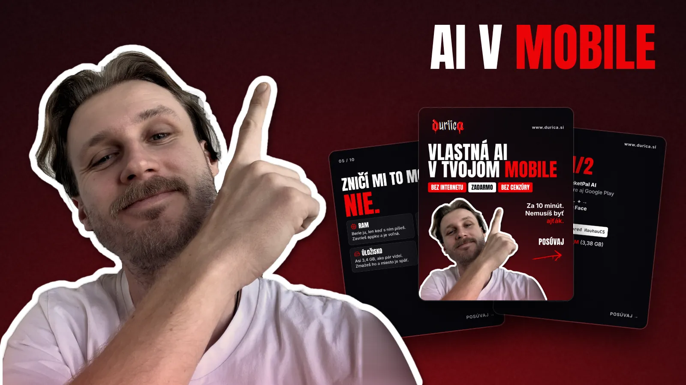
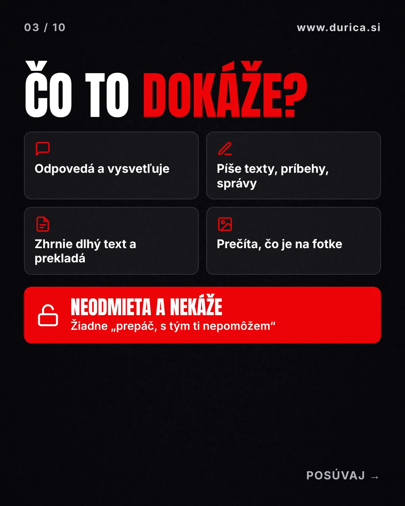
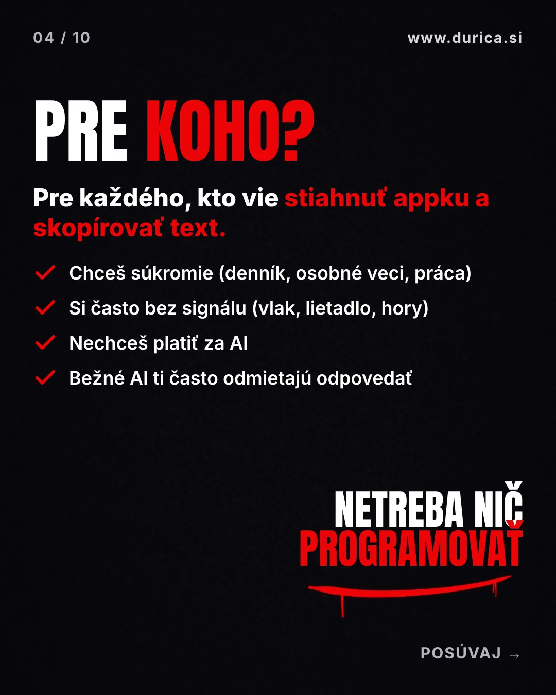
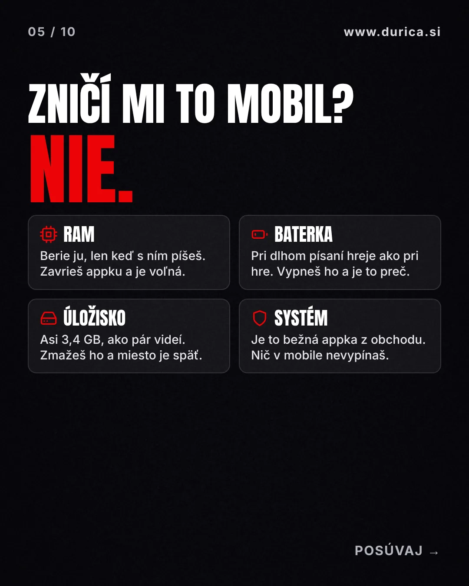
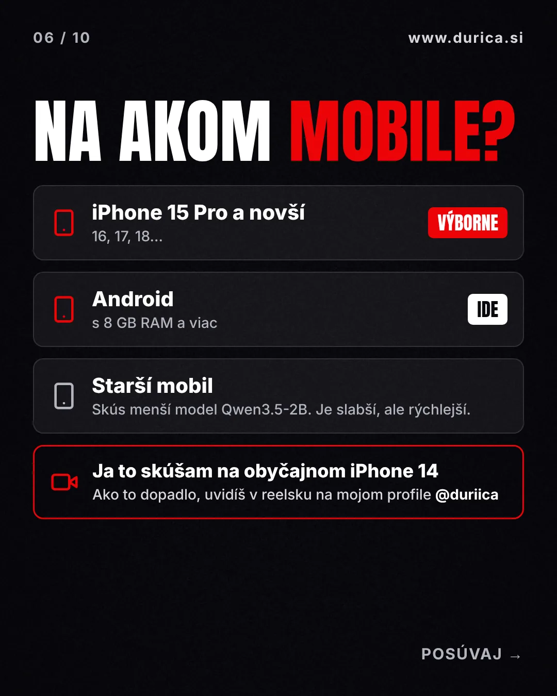
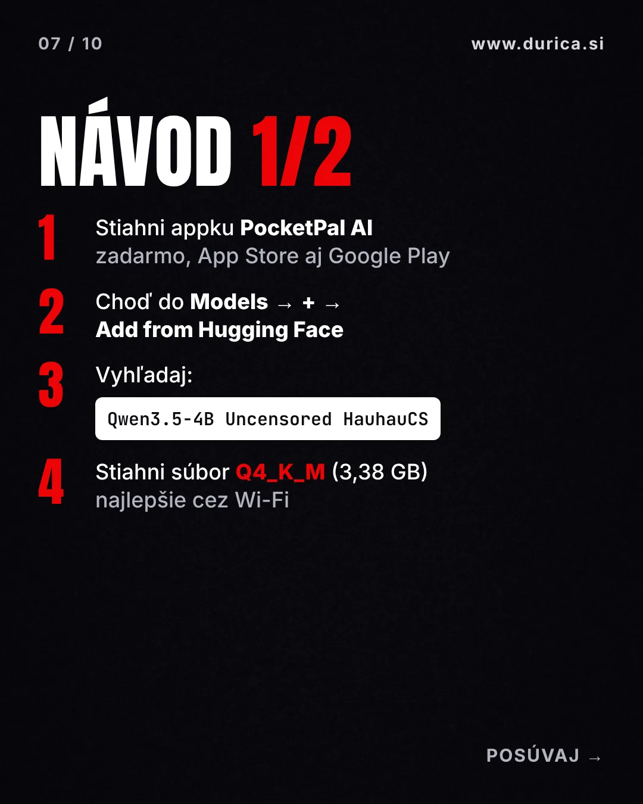
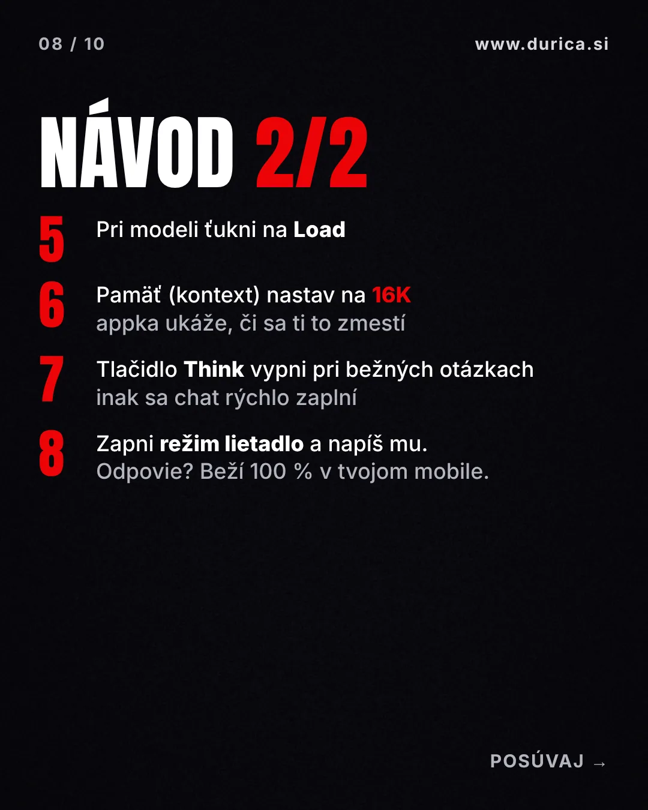
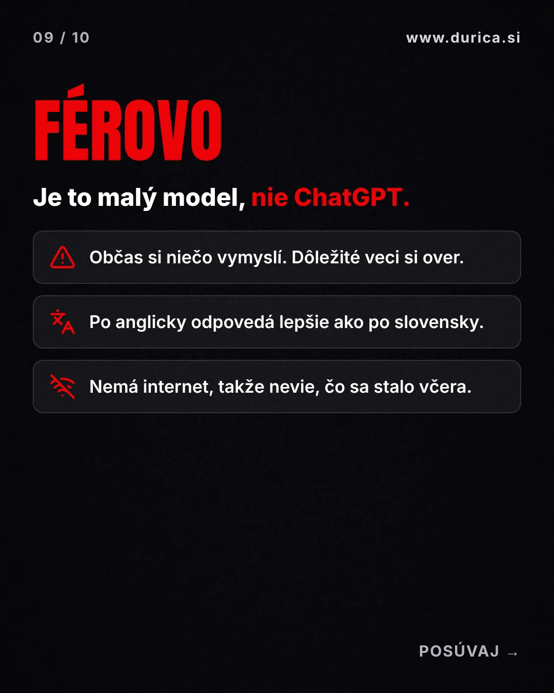

Blog ·
Vlastná AI v mobile: bez internetu, zadarmo a bez cenzúry
Nainštaloval som si do iPhonu AI, ktorá beží celá v telefóne. Funguje aj v režime lietadlo, nič neposiela na internet a neodmieta odpovedať. Tu je celý návod krok za krokom, čo to dokáže, na akom mobile to pôjde a prečo sa nemusíš báť, že si zničíš telefón.

Na X som videl návod, ako si dať do počítača aj mobilu AI, ktorá beží úplne offline. Nič neposiela do cloudu, nikto nečíta, čo jej píšeš, a neodmieta odpovedať. Tak som to skúsil na svojom iPhone. Funguje to a trvalo to asi 10 minút.
V tomto článku nájdeš všetko, čo som sa pri tom naučil: čo to je, čo to dokáže, pre koho to je, či ti to nezničí mobil a presný postup krok za krokom. Návod je aj v obrázkoch, takže si ho môžeš uložiť alebo poslať kamošovi.
Čo to je
Predstav si ChatGPT, ale bez internetu. Celá AI je uložená v tvojom telefóne ako jeden súbor a počíta priamo na ňom. Keď zapneš režim lietadlo, stále ti odpovedá.
- Súkromie: čo napíšeš, ostane v telefóne. Nikam to neodchádza.
- Zadarmo: žiadne predplatné, žiadny účet, žiadne limity správ.
- Offline: ide vo vlaku, v lietadle aj na horách bez signálu.
Čo to dokáže
Odpovedá na otázky, vysvetľuje, píše texty, príbehy a správy, zhrnie dlhý text a prekladá. Model, ktorý používam, vie čítať aj obrázky, takže mu môžeš poslať fotku a opýtať sa, čo na nej je.
A potom je tu tá časť „bez cenzúry“. Bežné AI často odmietnu odpovedať alebo ti namiesto odpovede dajú prednášku. Tento model je upravený tak, aby neodmietal. Hodí sa na drsnejšie príbehy, čierny humor, postavy a roleplay, pouličný jazyk alebo citlivé témy, kde chceš priamu odpoveď bez kázania. Zodpovednosť za to, na čo ho použiješ, je ale len na tebe.

Pre koho to je
Pre každého, kto vie stiahnuť appku a skopírovať text. Netreba nič programovať ani nič zapájať do počítača. Celé sa to robí ťukaním v jednej appke.
Najviac to oceníš, ak chceš súkromie (denník, osobné veci, pracovné texty), ak si často bez signálu, ak nechceš platiť za AI, alebo ak ti bežné AI často odmietajú odpovedať.

Zničí mi to mobil?
Nie. Na toto sa ma ľudia pýtajú najčastejšie, tak to rozpíšem:
- RAM (operačná pamäť): model ju zaberá len vtedy, keď je načítaný a píšeš s ním. Keď appku zavrieš alebo model uvoľníš, pamäť je hneď voľná.
- Baterka a teplo: pri dlhom písaní sa telefón zohreje a viac berie baterku, podobne ako pri hre. Keď prestaneš, je to preč. Ak by sa prehrieval, iPhone sa sám pribrzdí.
- Úložisko: model zaberá asi 3,4 GB, ako pár dlhších videí. Toto je jediná vec, ktorá ostáva stále. Keď model zmažeš, miesto sa ti hneď vráti.
- Systém: je to bežná appka z obchodu. Nič v telefóne nevypínaš, neobchádzaš ani neprepisuješ.

Na akom mobile to pôjde
Rozhoduje hlavne operačná pamäť (RAM). Model, ktorý odporúčam, potrebuje telefón s aspoň 8 GB RAM.
- iPhone 15 Pro a novší (16, 17, 18): ide to výborne. Ja to mám na iPhone 18 Pro a model píše zhruba 30 slov za sekundu, rýchlejšie, ako stihneš čítať.
- Android s 8 GB RAM a viac: ide to tiež, appka je aj v Google Play.
- Starší mobil: skús menší model, napríklad Qwen3.5-2B. Je slabší, ale rýchlejší a zmestí sa aj do 6 GB RAM.
Teraz to idem skúšať na obyčajnom iPhone 14, ktorý má len 6 GB RAM. Ako to dopadlo, ukážem v ďalšom videu na svojom Instagrame @duriica.

Návod krok za krokom
- Stiahni si appku PocketPal AI. Je zadarmo, v App Store aj v Google Play.
- V appke choď do Models, ťukni na + a vyber Add from Hugging Face.
- Do vyhľadávania napíš
Qwen3.5-4B Uncensored HauhauCSa otvor výsledok od autora HauhauCS (ten s najviac stiahnutiami). - Stiahni súbor Q4_K_M (3,38 GB), najlepšie cez Wi-Fi. Väčšie súbory Q8_0 (5,16 GB) a BF16 (9,1 GB) na telefón nesťahuj, sú zbytočne ťažké.
- Pri modeli ťukni na Load.
- Pamäť (kontext) nastav na 16K. Appka ti sama ukáže, či sa to do tvojho telefónu zmestí („Fits“).
- Tlačidlo Think pri bežných otázkach vypni.
- Zapni režim lietadlo a napíš mu niečo. Ak odpovie, beží to celé v tvojom mobile.


Ako mu nastaviť správanie
V appke si môžeš vytvoriť takzvaného Pala (v menu Pals, potom + a Assistant). Vyberieš mu model a do poľa System prompt vložíš text, ktorý mu povie, ako sa má správať. Ja používam tento:
You run offline on my own device and answer only to me. Be direct and complete, skip lectures and disclaimers, and say I don't know when you don't. Reply in the language I write in.
Po slovensky ti rozumie, ale odpovedá trochu krkolomne. Po anglicky píše lepšie.
Na čo som prišiel pri skúšaní
Prvý pokus sa mi zasekol aj pri otázke, koľko je 2 + 1038. Odpoveď prišla, ale hneď na ďalšej správe appka napísala, že chatu došlo miesto. Dôvod: mal som nastavený príliš malý kontext (2048) a zapnuté Think. Model si pred každou odpoveďou dlho „premýšľa“ a všetko to premýšľanie sa počíta do pamäte chatu, takže sa zaplnila aj pri jednoduchej otázke.
Pomohlo vypnúť Think a nastaviť kontext na 16K. Viac netreba. Pri 24K a vyššie appka hlási, že je to na pamäť telefónu tesné, a 64K by sa do iPhonu ani nezmestilo.
Ak by ti appka padala alebo písala veľmi pomaly, zmaž model a skús menší súbor alebo menší model. Nič tým nepokazíš.
Férovo: čo to nevie
Je to malý model, nie ChatGPT ani Claude. Občas si niečo vymyslí a „bez cenzúry“ neznamená „múdrejší“. Dôležité veci, hlavne zdravie, peniaze a právo, si vždy over inde. Nemá internet, takže nevie, čo sa stalo včera. A na ťažšiu matematiku či programovanie je slabý.
Na súkromné písanie, nápady, príbehy a rýchle otázky offline je to ale skvelá vec.

Čo príde ďalej
- iPhone 14: skúsim, či to pôjde aj na staršom a obyčajnom iPhone, a ukážem ti výsledok.
- Generátor obrázkov: pridám do mobilu ďalší modul, aby AI vedela aj kresliť. Tiež offline.
Obe videá budú na mojom Instagrame @duriica. Ak sa pri nastavovaní niekde zasekneš, napíš mi, rád pomôžem.
Chceš si niečo také vyskúšať sám? Ukážem ti to na tvojich vlastných veciach. Prvý rozhovor je zadarmo.
Poďme spolu →